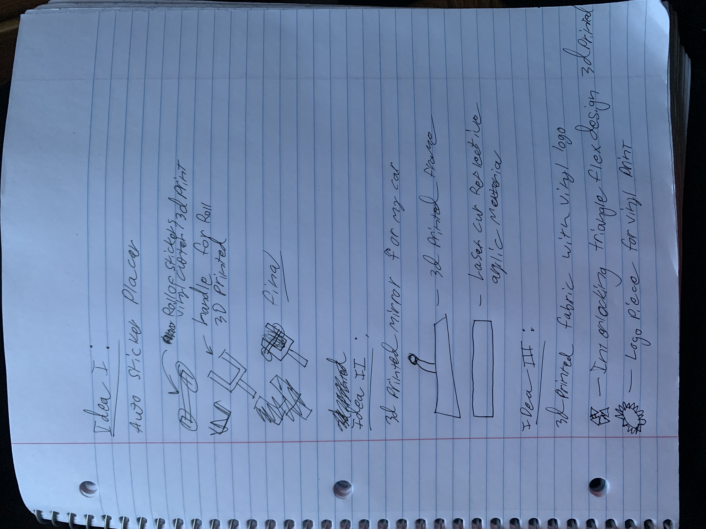
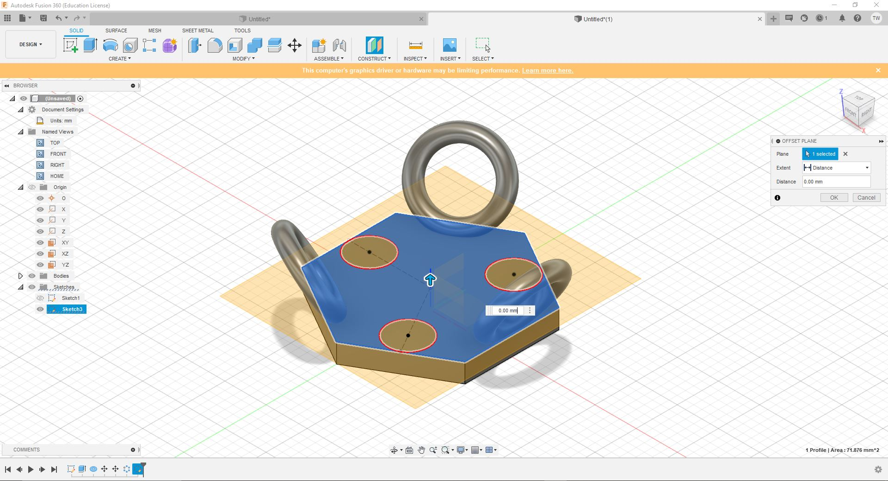
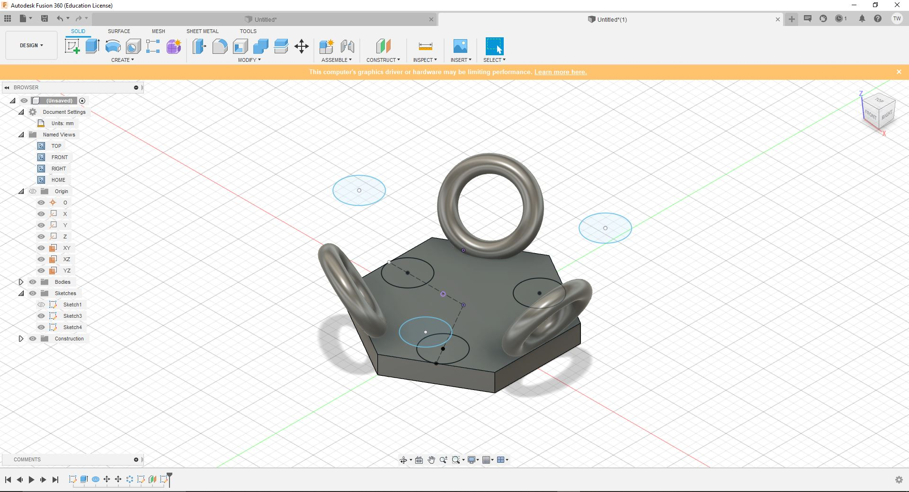
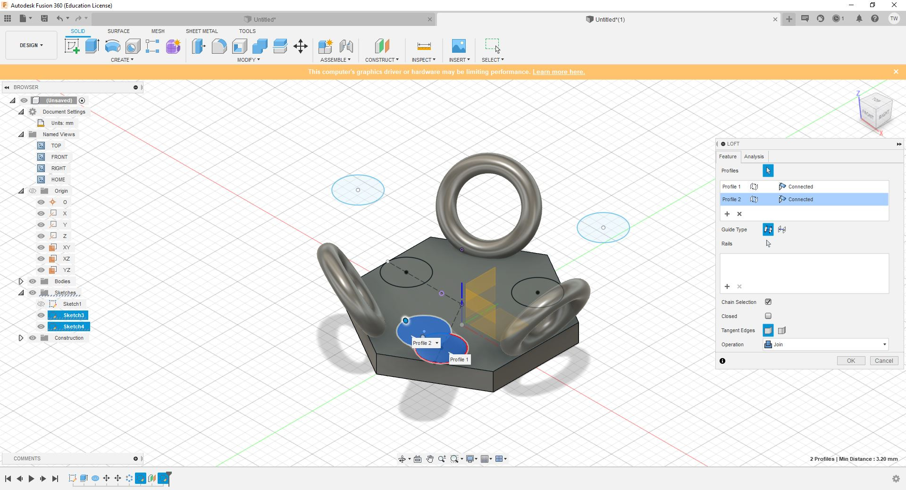
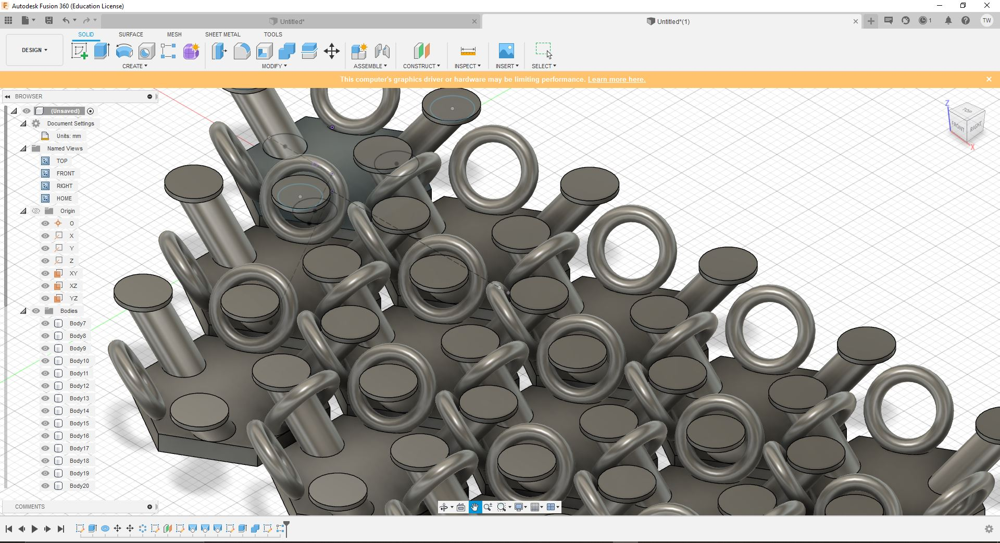
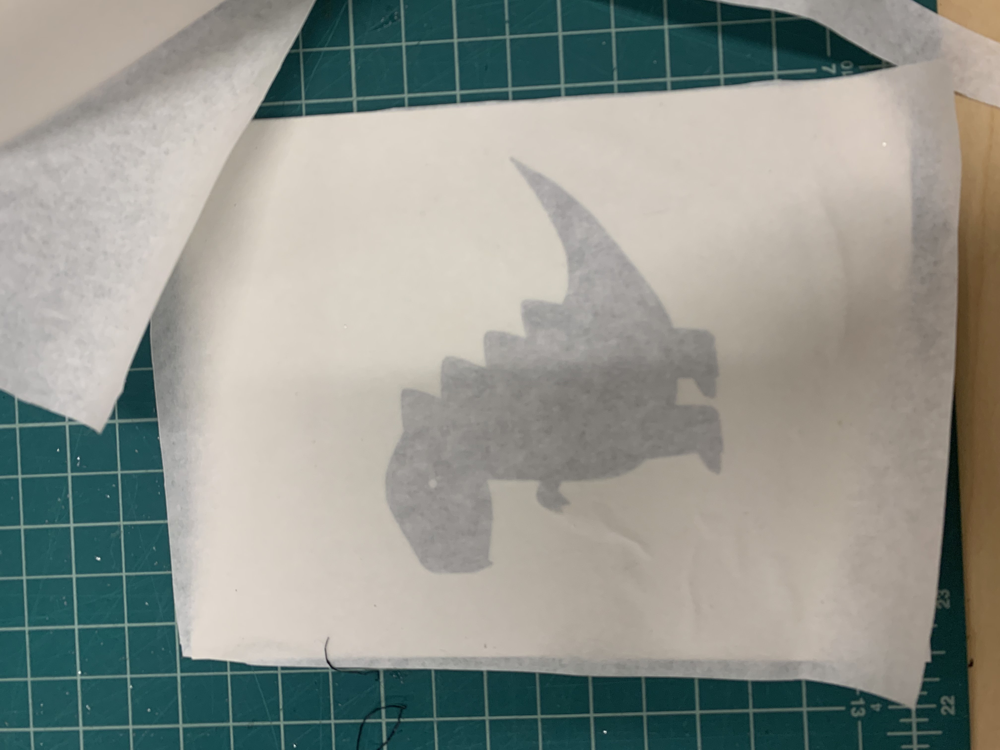
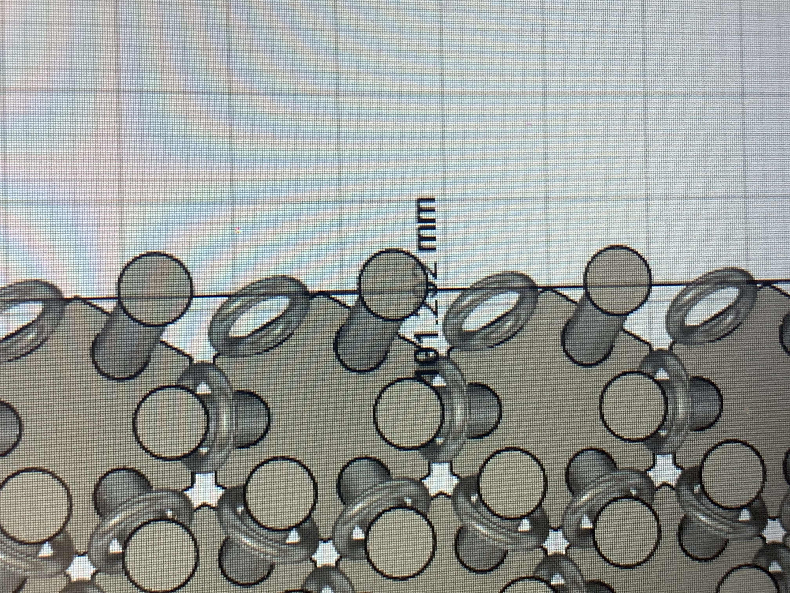

Final Project Page
This page will be dedicated to documenting each and every step working up to the final submittion of my Final project from Digital Fabrication. I will be taking pictures, including documents, and various other modes of documentation in order to provide the full scope of my project for readers to understand my process.
November 14th
- Create a Final Product Page
- Have at least three minimum ideas
- Meet with Whitney, Tuna, and or Madison to discuss your ideas
November 17th
- Design and Frabricate the first prototype of at least one component
November 23th
- Create first full prototype
- Propose budget/materials
December 6th
- Final Project Due
- Must be devivered to the Fiber Lab by 7PM
December 8th
- Developed final project page
- Documentation due
1. First Deadline
Idea Phase:
After much thought I came up with three different ideas utilizing three main machines: Vinyl Printer, Laser Cutter, and 3D Printer. For my first idea, I came up with the thought to create a device that would automatically place and press a sticker onto any surface. This idea came from a business that I have been working on. Currently I have been working with a friend of mine to create a thrifitng business where we would resell used clothes. During shipping we wanted to include a printed note to say thank you but we also wanted to customize and leave our label on the box. For this I wanted something that would do this fast and efficiently. This machine would help me with this. For my second idea I was thinking about something for my car that could be personalized using a 3d printer and vinyl. For this idea I was thinking about printing a read view mirror that could be customized using different designs in order to give the best view out the back of my car. However my final idea was to create some type of formatted packing paper in place of a sticker that would be custom to our brand and something that set us a part from other brands. This took a lot of thought and after meeting with Tuna we came up with the idea to make a 3D printed fabric as packing "paper" this could include a custom design by me and would also include our logo into the mix in order to make it our own. The third idea is what I will be pursueing for my final project.
Potential Sketches Related to my Ideas:
2. Researching my product
Inspiration and Material:
There are many ways to create and design a 3D Printed Fabric. In this section I will be analyzing the feasibility of this project while also drawing form other designs to see how I should and would design my fabric in order to have the best result.
Design 1:
Within this design we see that we have a very flexible design however the way that the design is different. In this design we see that the fabric is using a hex type of pattern while using a chainmail backing allowing to have a great amount of strength while also having a semi flexible design. This could pose as a good option for my fabric, however, something that could be super flowy could help the purposes of my final product that being said, during shipping it is important that the design would be strong enough to withstand any type of impact without seperating.
Design 2:
This design, designed by NASA, uses a interlocked helix pattern to increase flexibility while maintaining flex strength. This allows for high angles of flex without any snapping or extra strain. This is a highly complicated chainmail design that would be very hard to recreate however It would give me a very good basis for a designing my project.
3. Designing my Fabric
First Prototype
My first prototype was to see if the size of the fabric would hold together in a small format while staying strong despite its size. Here is how I made my design
- Starting off with a blank plane we start our sketch.
- Next we have to begin with the may piece that will be the top side of our fabric. Selecting the hexaginal circular shape we place a 30mm sized shape in the center.
- Now that we have our base we can move on.
- Using the resizing tool we need to resize it to 10mm.
- Now that we have it resized we can extrude this hex to 8mm in thickness
- What it should look like.
- Create a new sketch on the top of this hex and do not select a plane but select the top of the shape.
- Create a torus on this new sketch and create it to be 4.20mm with a diameter of 1.00mm.
- Make sure that this is a new body and not cut. This is what it should look like.
- Select move and copy tool and begin this process
- Input the following: Y Angle -90 Degree's
- Move to this view of the front.

- Input the following: Z Distance -3.5mm
- Move to the RIGHT view and Input the following: Y Distance -2mm
- Here is what it should look like.
- Move back to the FRONT view and Input the following: Y Angle 30 Degrees
- Here is what it should look like.
- Selecting the circular pattern and select the torus we created.
- Choose 3 Replicas
- Here is what it should look like
- Creating a new sketch on the top of the shape.
- Create a cirlce anywhere on the sketch that is 2.5mm in diameter
- Using the line segment tool select the origin and roughly attach it to the bottom right side in the middle. Make sure that is has a length of 5mm

- Selecting the line segment you just created make sure it is using the construct setting. Creating a dotted line. Then use the cosine tool
- Select the circle and the bottom right line segment and use the tangent tool
- Here is what it should look like.
- Again using the circular pattern select the circle and repeat the circle pattern to 3 repeats.
- Here is how it should look.
- Using the Offset plane tool select the top of the hex. make the distance 0.5mm
- Here is how it should look.
- Creating a new plane select the new offset plane that you just created.
- Go to this angle.
- Zoom out a little bit and create another circle roughly outside and parralel with your other circle. Make sure the diameter is also 2.5mm
- Using the parralel resize rool. Select the origins of both cirlces.
- Input the distance of 3.25mm between both circles.
- Here is how it should look. It should be perfectly parrellel between both circles use the measuring tool to make sure.
- Using the circlular pattern tool select the outside circle and choose repeating 3 and click ok.
- Here is how it should look
- Move to this view.
- We are going to loft each of these circles. Follow closely. Using the loft tool select the bottom cirlce and then the top circle and join.
- Repeat this step for each side. Here is how it should look.
- Create a new sketch plane on the top of one of the lofted circles.
- Create a circle with the diamter of 3.5mm
- Using the circular pattern tool repeating 3 times.
- Here is how it should look.
- extrude these circles to 0.3mm
- Select all.
- Combine all.
- Create a new sketch and select the bottom plane.
- Using the line segment tool and construct option create these line segments.
- Using the rectangular pattern tool follow these settings
- Select all.
- Select the two line segments we created and input the following settings: Quantity 3, Distance 11mm, Quantity 5, Distance 11mm.
- Here is how it should look.
Printing the first Prototype
In this section, I will be providing some context for different decisions that I made throughout this process. During this step it was beginning to get increasingly difficult to reserve and or obtain a 3D printer. However, with the help of Tuna, I was able to use the mini 3D printer that was not readily reservable on the booking sheet. Now able to utilize this I began to setup the print. Here is how it went.
- Starting the process Tuna and I had some issues feeding the PLA and getting it fed into the printer.
- Here is a picture of the PLA finally being fed into the machine after some maneuvering.
- Finally after the the hassel, we finally got the file to begin printing. This print was estimated to be about an hour.
- During the print. Here you can see the printer beginning the brim to make sure it is sturdy.
- Progress.
- Here is what the first prototype looked like after print with brim still attached.
- Another picture from the front of the printed prototype.
- After removing the brim this is what it looked like.
- Me testing its bending stregth. It is bendable but I wish it could go further.
- A closer look.
4. Reflection and Next steps.
For the most part, part of the reason why I chose this form of fabrication is because of my idea. Originally I thought that it was so interesting how versitile 3D printing is and the possibilities that can go along with this fabrication method. You really have so many different options and for my project it was the best and most viable fabrication method for my idea. I find it so interesting that 3D printing can be used to create flexible designes that could eventually replace fabric entirely. However, I do not think that my product is by any means a replacement for fabric but I do think it is a step in the right direction. The next steps now are to up the scale of the "frabric" to see how it would hold and if its flexibility would increase or stay the same. Along with this, I need to prototype my second component which is my logo using the vinyl cutter.
5. Designing and printing my logo.
Second Prototype
In this section I will be showing how I created my logo in Illustrator and the vinyl print of my sticker that will be going onto my final product.
- Starting off, I decided to go with a cartoony style. But I needed a body. Looking at some references of cartoon dinosaurs I decided on this shape for the body. Using the pen tool, curvature tool and direct select tool in order to get the curves and shapes that I wanted.
- Now that I have the body done I chose to move on the spikes on the back. Simply using the curveature tool I was able to connect a curved line segment to the existing body and repeated the process 3 more times.
- Moving onto the hands. These were a little more difficult to make. However, after some maneuvering I was able to achieve the desired effect. For this I created a "W" using the pen tool and connected the lines using the curveature tool to the body.
- Here we move on the the feet. Similar to the hands I started with the closer toe creating a base for added depth. Then finished the shape using the tool to close the paths.
- Here is the closed path.
- Moving forward to the eyes which were pretty straighforward. I used the eclipse tool to create a black circle as the base of the eye then repeated this process with white circles to add detail.
- Pupil one.

- Pupil two.
- Using the same process for the first feet I created the closer toe for depth and extended the lines to represent that this is the front foot.
- Closing the path to create a solid shape.

- Using the pen tool I added a mouth with teeth. However there wasnt enough detail to determine that there were teeth.
- Before tackling the teeth I needed to finish with the other arm. I simply just copied and pasted the first arm and extented the limbs in order to make it realistic and proportionate.
- Here are the teeth that I added to add detai. I created white triangles and flipped them in order to fit into the spaces I drew in the mouth.

- Final.
Printing the second Prototype
- Unfortunately I forgot to take pictures of the process of the vinyl cut but you may look at my vinyl cutting week to see how it is done. Since this was a adhesive print I needed to use adhesive printing vinyl. After It was printed I cut to size and prepped it to be placed on my final fabric.
6. Reflection two and Next steps.
I believe that my next steps are now to increase the size of my fabric and make begin printin in order to have enough space for my vinyl and big enough to make it apparent that my product works and actually does move.
7. Designing and printing my final product.
Final Product
- From one of the last steps in Fusion 360 we chose to make the quantity of both directions 3 and 5 however we need it to be way bigger. Thereofore, I went back into fusion and exported another file where our quantities were 10 and 10 which made it significantly bigger.
- Here I was measureing how big the actually size of the print would be and if it would fit onto the printing plate for the MINI printer. This is the length
- Here is the width

- Here is a picture of the screen of the printer which would tell me how long the print would take and how hot the PLA is and the printing plate is. Unfortunately this picture glitched and the screen could not be seen. However, the screen did say that it was ready to print and that it would take 7 hours.
- This picture is showing the start of the final product. The printer here is creatign a brim to ensure that it is sturdy enough to hold together and adhere to the plate and does not move throughout the print.
- Further along in the print we see the structure is coming together and it is holding together nicely.
- How much longer was left in the print at this point.
- Here is the final print of the full scale product. You can see my small print to the right and the brim has been taken off of the final print.
- Here is the back side of the print to make sure that all the hoops and structure is in order and printed well.
- After cutting out my vinyl in the previous section I placed it onto the final print and used an exacto knife to cut out the slots where the fabric would normally bend so that the logo would bend with it.
- Here is how it all turned out.
8. Reflection on the final.
Final Reflection
Throughout the project I will admit that my attention to the deadlines have been absolutely awful. I really needed to do a better job at making sure that I managed my time well. However, that being said when It came down to it I am really impressed with what I was able to achieve and my proactiveness reaching out to Madison and Tuna for help. Overall, I thought that my documentation has been really good. In some areas like the vinyl section and creating the Logo I certainly could have gone into much greater detail. However, to add some context, I did have to recreate the logo as I made it previously and in the time frame I had left I found it more important to prioritize creating this page and making sure that my print was finished on time along with all the other components. In terms of the final product, I am really impressed with how it came out. In the end I think I could have certainly done certain things better like not including a brim, made the shape a square, and made it bigger. However, in the time that I did have I am thourougly impressed.
File Download Section
This section is where you can download all files assosiated with this project.
Download STL File : Small Print
Download STL File : Final Product Size
Download JPG File : Dinos Logo
{kind=link}
Download PDF File : Material List
Share Link if download does not work: https://docs.google.com/spreadsheets/d/1rx1TQU5N9orP7XxP-Qn1HLUv8YLwZmjAYzRpk9AbMNc/edit?usp=sharing